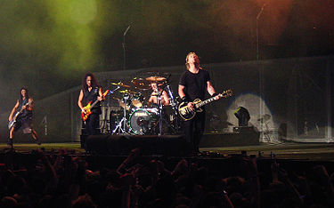

List of music genres: Rock music
There are only four musical styles: folk music, sacred music, academic music and popular music. Each genre has a number of genres of music and each genre has many subgenres.
Music is an integral part of most people's lives. Musical works are listened to in all corners of our planet, even in the most distant ones. Despite the immense popularity and importance of this art movement, many people do not think about what styles and genres of music exist. This article discusses the TOP-10 musical directions, which have not lost their popularity to this day.
Due to the variety of different genres, many of you are wondering: What styles of music are there? We have tried to answer your question and organize the main styles of music in a separate list, which, in the opinion experts will always be popular despite many years.
Rock music
Rock music- a generalized name for a number of areas of popular music. The word rock (translated from English - "rock", "rock", "swing") originated as an abbreviation for the name of rock and roll, chronologically the first genre of rock music, and denotes rhythmic sensations characteristic of rock and roll, associated with a certain form of movement, by analogy with roll, twist, swing, shake . Most often (but not necessarily) rock is performed with using electric guitars and drums. It is typical for rock musicians to perform compositions of their own composition. However, these elements in themselves do not yet make music rock, and therefore the belonging of some styles of music to rock is disputed.